Префектура Хиросима · Этадзима · оливки и гастрономия
Остров, где выросли оливки: гастрономическое путешествие по Этадзиме
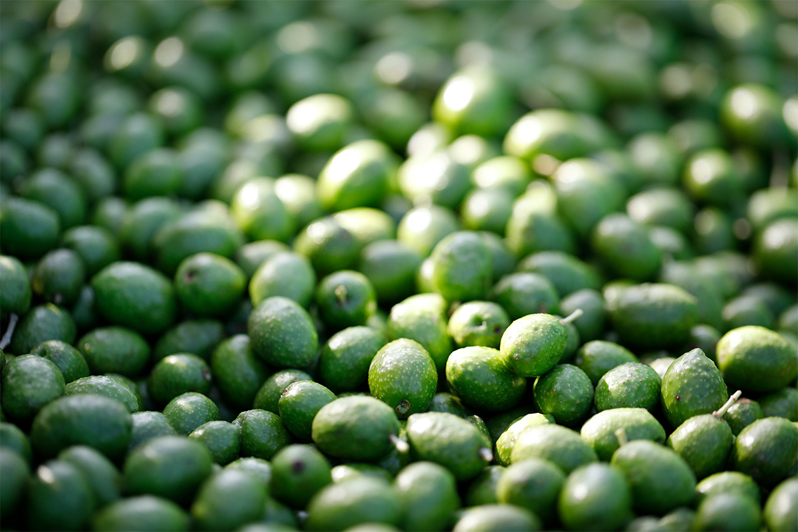
До Этадзимы полчаса парома от Хиросимы. Двенадцать лет назад остров начал превращать заброшенные поля в оливковые рощи, и у него появился новый вкус: масло, свежие оливки и обеды с видом на залив.
Остров
Как Этадзима стала оливковой
Этадзима лежит в Хиросимском заливе, к югу от города Курэ, и с материка её несложно добраться: на машине от Хиросимы, через мосты Ондо и Хаясэ, примерно час сорок, паромом от пассажирского терминала Удзина от тридцати до сорока минут. Остров давно любим как место выходного дня, здесь традиционно разводят устриц и растят цитрусы. Но с возрастом жителей и оттоком населения заброшенных полей становилось всё больше.
Около двенадцати лет назад город, местные компании и жители взялись решить эту проблему по-этадзимски: сделать остров оливковым. Город дёшево продавал жителям саженцы, собранные плоды скупали местные компании, а на городской давилке можно было недорого получить своё собственное масло. Выбор культуры объясним: национальный интерес к здоровой еде поднимает спрос на японское оливковое масло, уход за оливками легче, чем за цитрусами, что важно для пожилых садоводов, а тёплый климат острова подходит деревьям идеально. С 2011 года на острове высажено больше семнадцати тысяч деревьев, и с каждым годом Этадзима красится в оливковый цвет.
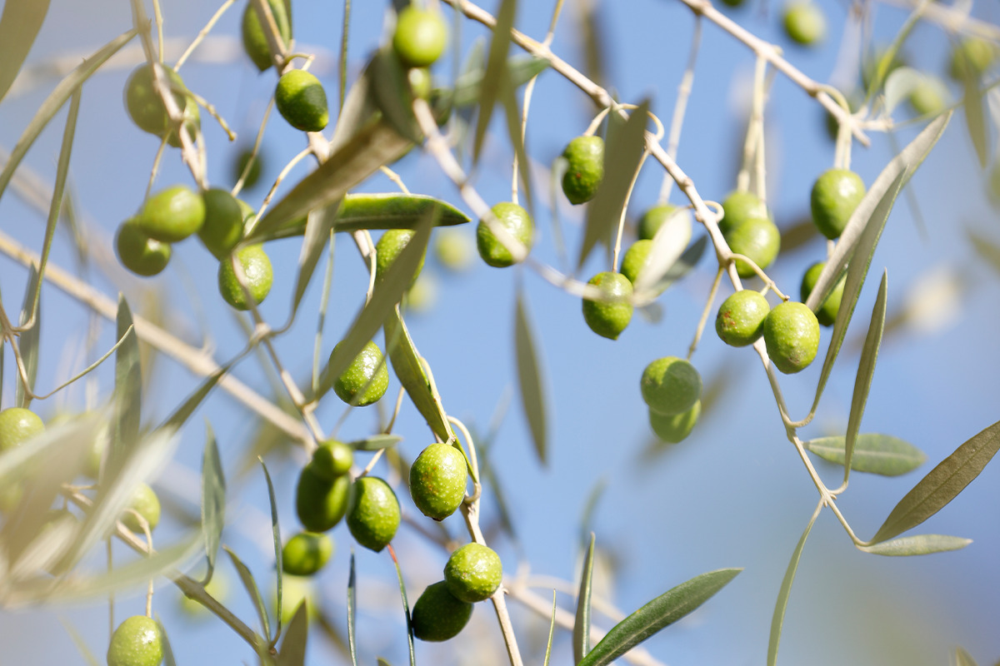
Деревья
Живые памятники острова
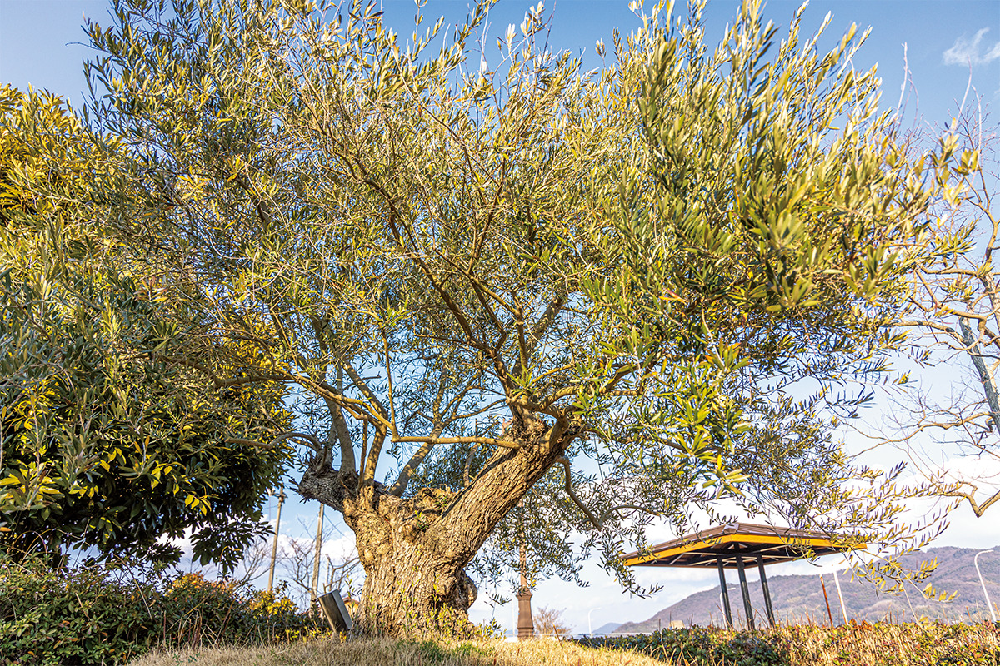
В городе стоят два дерева, без которых трудно понять местную историю оливок. В парке у моря в местечке Оги посёлка Огаки растёт олива, посаженная триста пятьдесят лет назад: ствол впечатляющей толщины говорит сам за себя. Дерево сорта ретин привезли из Испании на средства горожан, собравших пожертвования. Вторая реликвия старше: олива возрастом четыреста лет растёт на холме у мелководной бухты в центральной части острова, её раздвоенный ствол раскинулся, как веер. Оба дерева можно найти по адресам в округе Осаки и в местечке Конан.
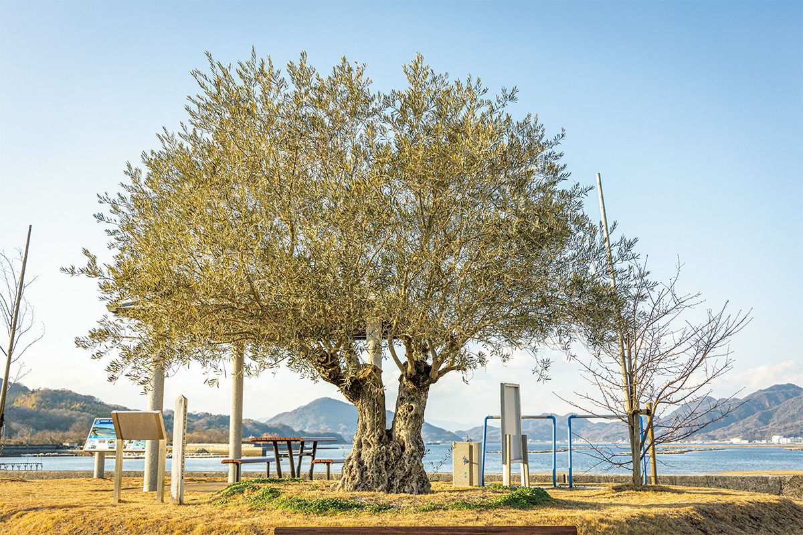
Фабрика
«Этадзима Олив Фактори»: увидеть, попробовать, пообедать
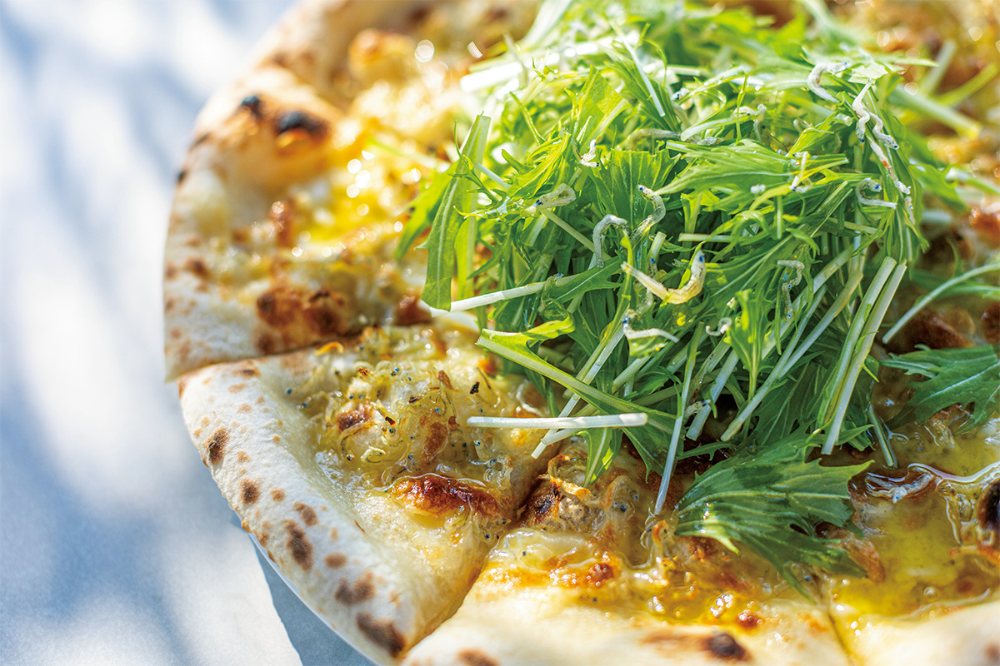
Сердце оливкового дела острова, фабрика «Этадзима Олив Фактори» компании Ямамото Курабу. В рощах компании на острове растёт около двух тысяч взрослых деревьев, и оператор хочет расширять посадки силами всего острова вместе с городом. Большая часть этадзимского урожая стекается сюда, в цех рядом с магазином, и осенью в сборе можно увидеть, как из плодов отжимают масло. В магазине продают собственную продукцию и товары соседних хозяйств, а в ресторане пробуют то же масло уже за столом с видом на оливковые ряды.
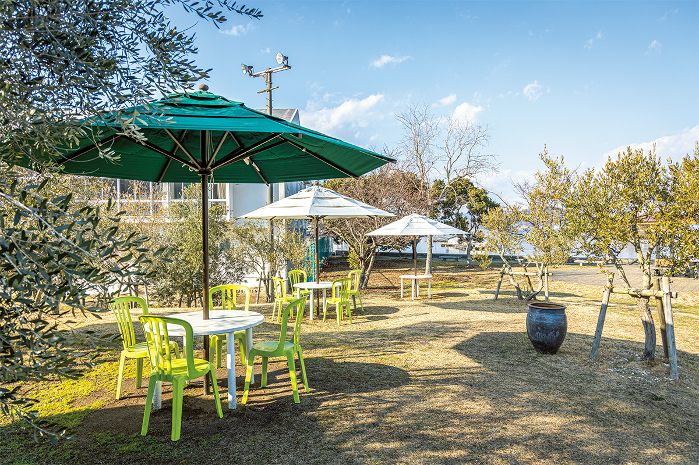
Фирменное масло «Аки-но сима-но ми», «плод острова Аки», собирало высшие награды на международных конкурсах. Ещё один местный аттракцион: к заказанным блюдам бесплатно добавляют ароматные масла, настоянные на хиросимских продуктах, их четыре: лимонное, с хассаку, с перчиком и экстраострое.
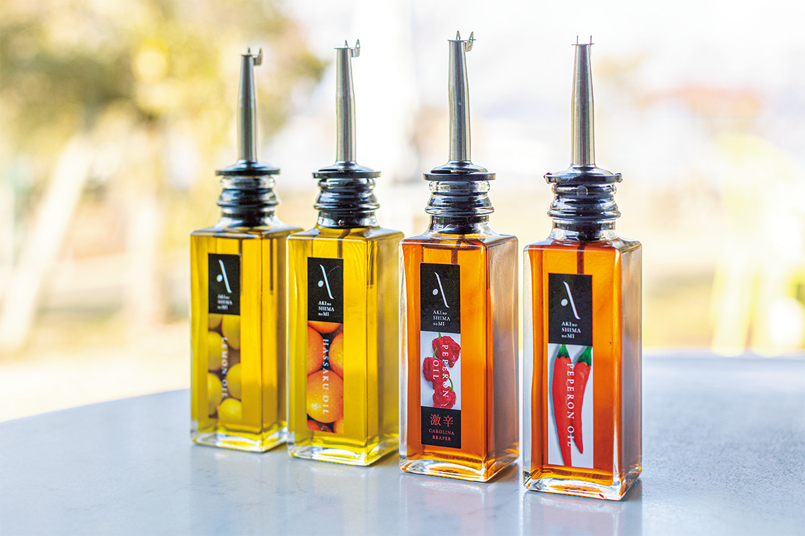
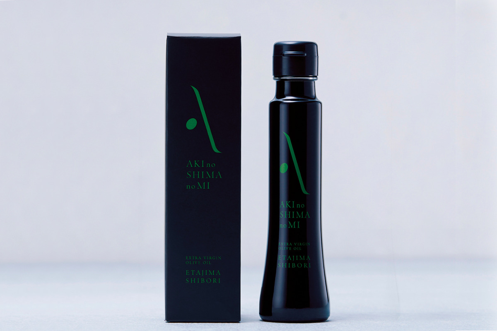
«Аки-но сима-но ми» Этадзима Олив Фактори
- Адрес
- префектура Хиросима, Этадзима, Осаки, Оги, 862-3
- Телефон
- +81 823-57-5656
- Часы работы
- в будни 11:00–16:00 (кухня до 15:00), в субботу, воскресенье и праздники 11:00–18:00 (кухня до 17:00)
- Выходные
- понедельник (если понедельник праздничный, следующий день рабочий)
Ферма
«Минэо-ноэн»: учиться у дегустатора масел
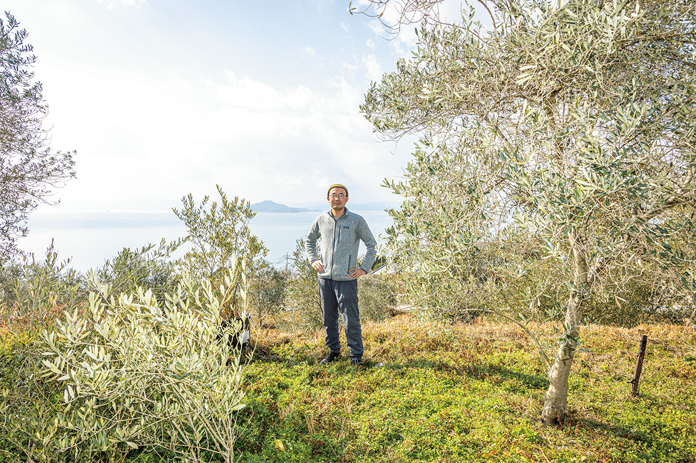
Своя оливковая история у частной фермы «Минэо-ноэн» на холме, откуда видно море. Её хозяин Рёхэй Минэо шесть лет назад перебрался сюда из Канагавы в составе городской программы переселения, работал инструктором по выращиванию оливок, а потом завёл собственное дело. Вид с этого холма убедил его превратить заброшенное поле в рощу. Он уговаривал владельцев земли, поднимал целину и сажал деревья; первый настоящий урожай ферма собрала осенью 2021 года.
Масло здесь давят на собственном производстве и разливают по трём видам в зависимости от срока сбора: собранное в начале октября «Стронг» с глубокой горчинкой и остротой, «Мидиум» середины октября с зелёным ароматом и перечной остротой в послевкусии и позднее «Милд» с запахом молодых трав. Такую линейку редко встретишь даже у крупных производителей: это фирменный приём дегустатора оливкового масла, сертифицированного специалиста. Кроме масла ферма делает и свежепосоленные оливки, а теперь проводит курсы дегустации, осенью собирает урожай вместе с гостями и учит готовить оливковый чай.
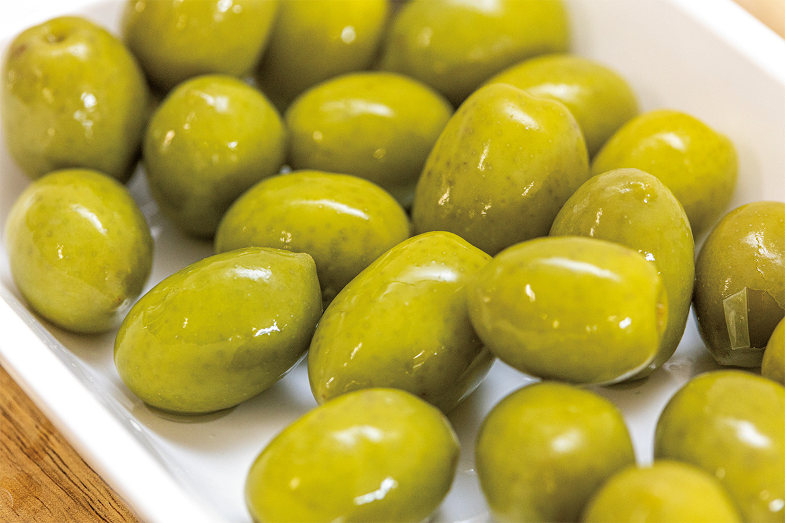
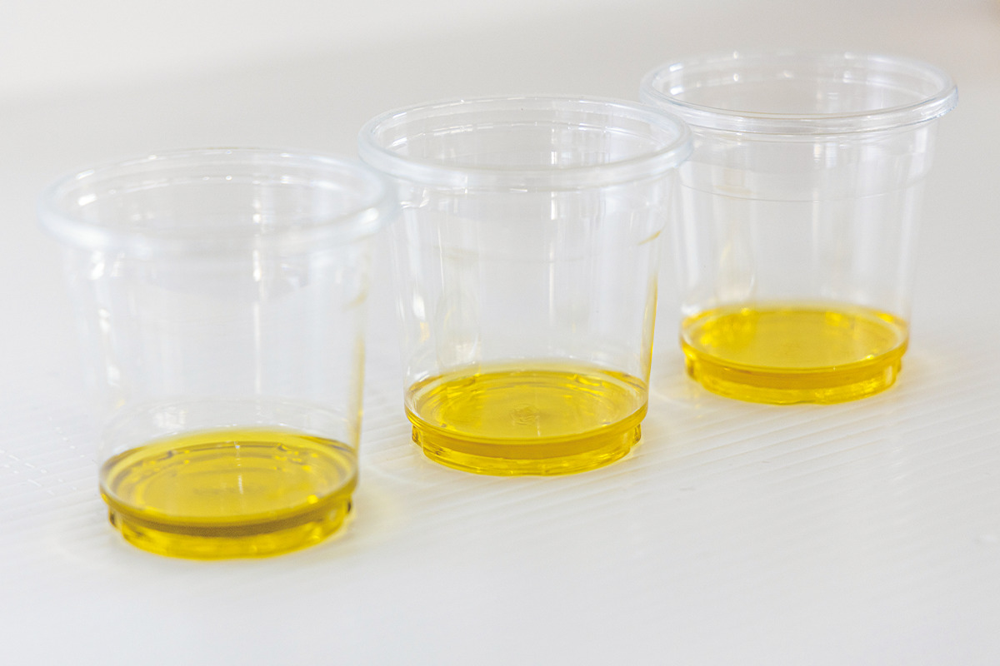
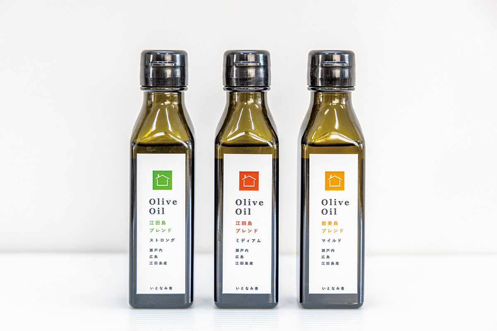
Сэтоути итонами-ся, ферма Минэо
- Адрес
- префектура Хиросима, Этадзима, Номи, Накамати, 3769-1
- Телефон
- +81 90-1790-9904
Отдых
Рёкан «Этадзима-со»: ночь с видом на залив
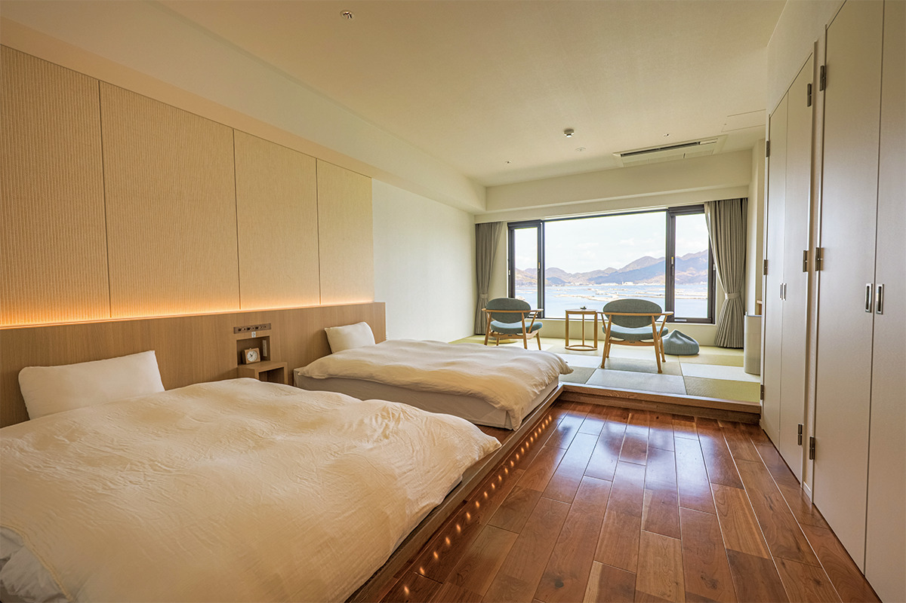
Закончить день стоит в рёкане «Этадзима-со» с термальным источником. Стены здесь оклеены редкой тканью сифу, бумажным полотном, которое делает местная фабрика, в номерах встречают наборы ароматических масел, на террасе греют ноги в ножной купели, а чай заваривают из трав собственного сада. В мини-библиотеке можно написать открытку-картину местными чернилами: коллекция насчитывает сто тридцать три цвета хиросимских производителей. Косметика с оливковым маслом, изготовленная для рёкана на месте, продаётся здесь же.
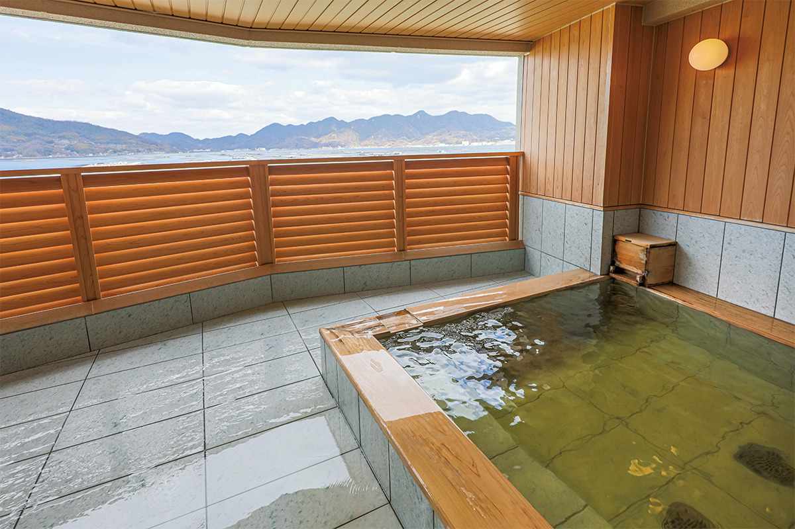
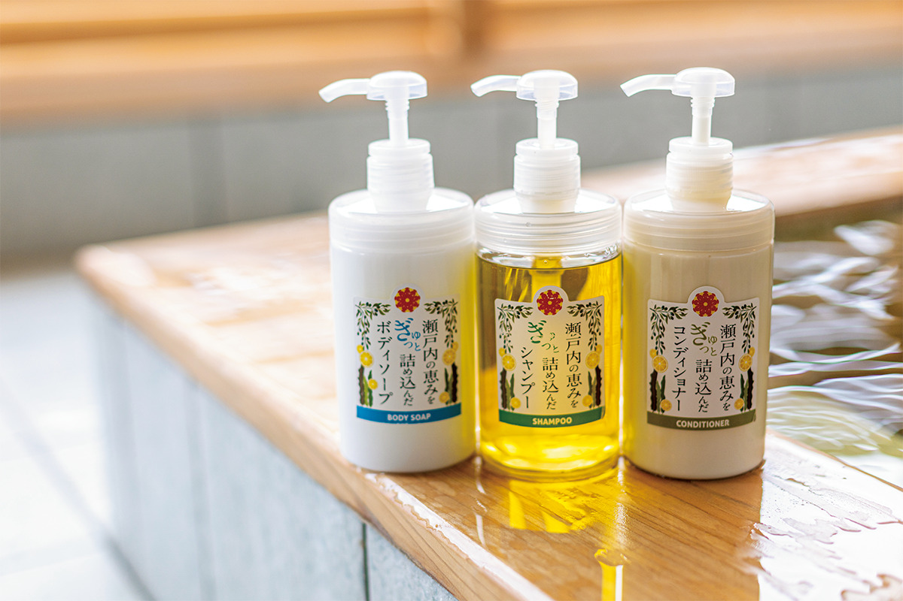
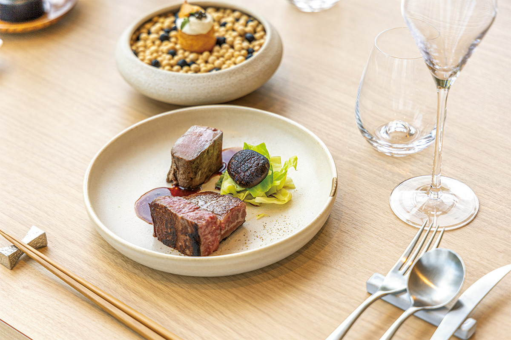
В термальном источнике можно искупаться и без ночёвки, а приватную купель бронируют на пятьдесят минут. Ужин собирают из даров острова: рыба из соседнего моря, местные цитрусы, мясо дикого кабана, хиросимская вырезка.
Рёкан «Этадзима-со»
- Адрес
- префектура Хиросима, Этадзима, Номи, Накамати, 4718
- Телефон
- +81 823-27-7755
- Номера
- 32
- Цены
- от 24 200 иен с человека за ночь с двухразовым питанием
- Сайт
- etajimasou.jp